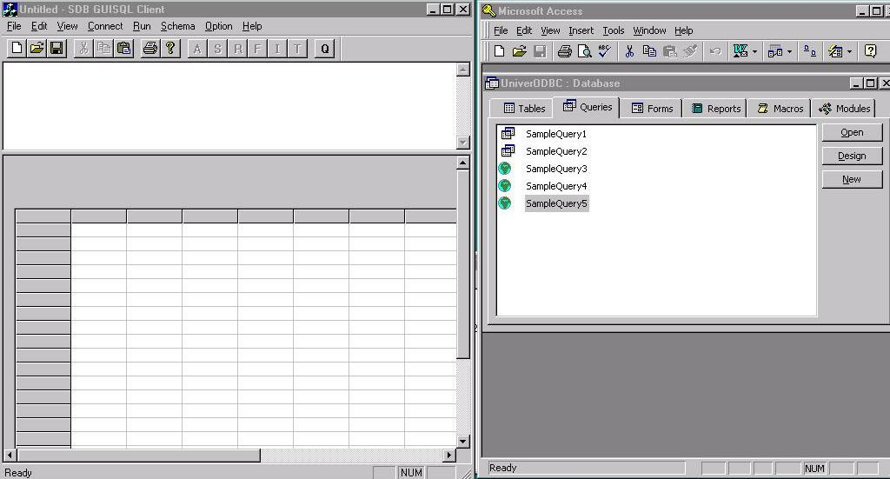

Part IV: Semantic DBMS Sem-ODB: Semantic SQL
via own GUI and via MS Access QBE Demonstration
In this part of our presentation, we demonstrate Sem-ODB
and the SDB Control Server (the Semantic SQL interpreter for Sem-ODB) through
a client application which was developed using our native Sem-ODB APIs.
We demonstrate Semantic SQL queries being posed on against a University
Schema by accessing the semantic database Univer.db via both our native
APIs and the Semantic ODBC Driver.
In the following screenshot, the left window shows how
queries are sent to the SDB Control Server via our native APIs and the
window on the right shows the semantic database being accessed via the
Semantic ODBC Driver using MS Access.
